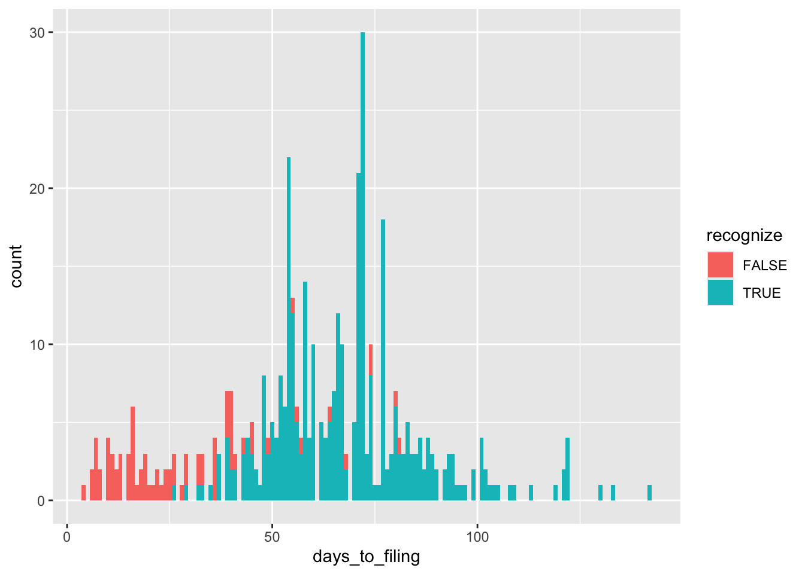
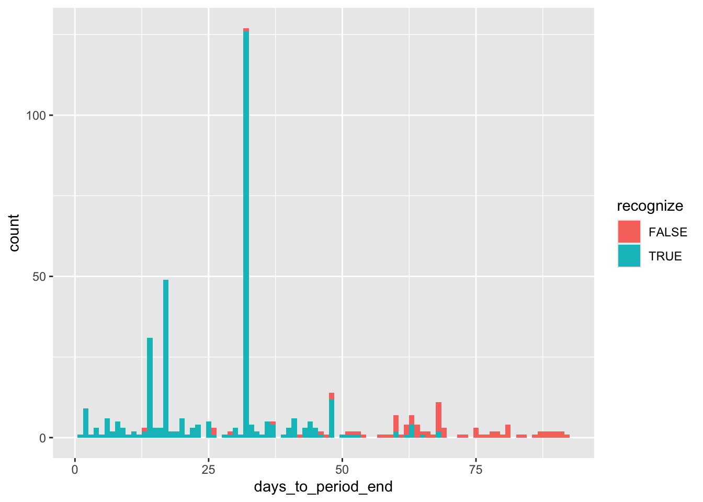

pacman::p_load(farr, tidyverse)9 自然実験
本パートでは、データから因果関係を推論する際に関連するいくつかの問題について探求する。 このトピックに関する多くの論文は、操作変数や回帰不連続デザインなどの方法に直接取り組む。
ここでは、ランダム化実験のベンチマーク設定から始め、統計的方法が（設定の特徴に応じて）信頼性のある因果関係を支持する可能性がある設定に段階的に移行することを意識的に選択している。 架空のランダム化実験と推測される因果関係のメカニズムについて慎重に考えることは、統計分析を問題の因果関係に関する問題に適用するために必要な思考を研ぎ澄ますのに役立つと考えている。
この章では、ランダム化比較試験の概念とそれに関連する自然実験の概念を紹介する。 多くの議論が因果関係の推論におけるランダム割り当ての価値に焦点を当てている一方で、実験の他の特徴も重要であることを説明する。 認識と開示の問題を探求し、研究問題のフレーミング自体がどんな実験にも重要な影響を与えることを示す。
この章のコードでは、以下のパッケージを使用する。 本書のコードを使用するためにコンピュータを設定する方法については、セクション1.2を参照せよ。 以下の演習問題のQuartoテンプレートはGitHubで入手できる。
9.1 ランダム化実験
ランダム化実験は、研究デザインの中で「最も信頼性の高い方法」として広く認識されている。 ランダム化実験のアイデアは非常にシンプルである：観測値はランダムに処置条件に割り当てられる。 二値の処置変数の場合（つまり、単位が処置されるかどうか）、単位が処置されるかどうかは、コイントスなどのランダム化メカニズムによって決定される。 因果関係ダイアグラムにおいて、Xが処置変数である場合、このようなランダム化は、Xに矢印がないことを意味し、因果効果を推定する際に制御する必要がある交絡要因がないことを意味する。
具体的な例として、Jackson et al. (2009)を考えてみよう。 タイトル（「企業の減価償却方法選択の経済的影響」）から、処置の対象が企業の減価償却方法の選択であることが推測される。 Jackson et al. (2009)が焦点を当てる具体的な方法選択は、加速減価償却と直線減価償却であり、興味のある結果（「経済的結果」）は資本投資である。
実際には、企業は、関連する資産の経済的減価償却、資産の有用寿命（寿命の短い資産の場合、選択は重要ではない可能性がある）、およびさまざまな財務報告のインセンティブ（例：成長する企業は、直線減価償却を使用すると、近い将来に収益が高く報告される）など、いくつかの要因に基づいて、加速減価償却と直線減価償却の選択を行う可能性が高い。 これらの推測される減価償却方法の選択に影響を与える要因が資本投資にも影響を与える場合、Jackson et al. (2009)で求められるような因果推論を混乱させる可能性がある。
しかし、何らかの方法で企業を加速減価償却条件または直線減価償却条件にランダムに割り当てる能力があれば、割り当てられた処置条件に基づいて企業の資本投資を比較することで、因果関係を推論することができる。
このような実験を行う際には、明らかにいくつかの課題がある。 まず、割り当てられた減価償却方法を受け入れるよう企業に強制するための十分な権限を持つ規制当局である必要があるだろう。 そのような権限を持っていても、減価償却方法の選択の影響を理解する強い欲求がない場合、なぜ規制当局がそのような実験を行うかは明確ではない。そして、通常、規制当局はより重要な問題に取り組んでいる。 一部の実験は、単一の企業の協力だけで済むかもしれないが、この研究問題には当てはまらない（例えば、独立した投資権限を持つ多くの部門を持つ企業が必要となる）。
実際には、実験に最も近いのは、研究者のコントロール外の要因に依存して、処置条件への割り当てをランダムまたはDunning (2012)の用語で「あたかもランダム」で行う自然実験と呼ばれるものである。
この章では、まず、ランダム化実験のベンチマーク形式であるランダム化比較試験を研究する。 次に、ランダム化比較試験を他の実験形式、自然実験を含む、と比較する。 ランダム化実験に関する議論を具体的にするために、実務家と研究者の両方にとって興味深い環境である認識と開示に焦点を当てる。 この環境を念頭に置いて、Michels (2017)で使用されている可能性のある自然実験に移り、この環境がどのような信頼性のある推論を支持するかを考える。
9.1.1 ベンチマークとしてのランダム化比較試行
ランダム化実験は、医学においてランダム化比較試行またはRCTとして実施されることが多い。 Akobeng (2005, p.837)は、RCTを「参加者が2つ以上の臨床介入のうちの1つにランダムに割り当てられる研究の一種」と説明している。 RCTは、利用可能な仮説検定の中で最も科学的に厳密な方法であり、介入の効果を評価するためのゴールドスタンダードの試験と見なされている。
理想的な形では、RCTは単に処置へのランダム割り当てを含む以上のものである。 Akobeng (2005)に基づいて、理想的なRCTの特徴として以下を挙げることができる。
- 比較する処置が事前に指定されている。
- 興味のある結果が事前に指定されている。
- 提案された分析が事前に指定されている。
- 必要な参加者数が事前に特定されている（パワー計算を使用）。
- 必要な倫理承認が得られた後に参加者が募集される。
- 参加者は処置群にランダムに割り当てられる（コントロールを処置の1つと考えることができる）。 参加者はどの処置群に割り当てられたかを知らない（隠蔽）。 処置を行う者（例：医師、看護師、研究者）は、参加者がどの処置群に割り当てられたかを知らない（ブラインディング）。
したがって、ランダム割当処置は、RCTのいくつかの構成要素の1つに過ぎない。 候補となる自然実験が処置へのあたかもランダムな割り当てを提供すると主張できたとしても、自然実験にはRCTの他の特徴が欠けている。
第1に、処置は研究者によって指定されるのではなく、企業、規制当局、または「自然」によって指定される。ここで「自然」とは、自然だけでなく、研究者によって十分に理解されていないかもしれない複雑な経済的な力を含む広い解釈を意味する。 （自然実験の文脈で用いられる広い解釈を強調するために、「自然」という言葉を引用符で囲むことがよくある。） これは、自然実験を「発見」する研究者は、自然が割り当てる処置が研究者にとって興味深いものであることを期待するか、他の研究者にこれらの処置が興味深いものであると説得する必要があることを意味する。
第2に、これにより、一般的には、「実験」が実施される前に結果と分析手順を事前に指定することは意味がない。 多くの場合、自然実験は実験が実施された後に特定される。 その結果、p-hackingを防ぐことが難しくなる。p-hackingとは、研究者が意識的であろうと無意識であろうと、さまざまな結果と分析手順を検討し、最終的に「統計的に有意な」結果を得るまでのプロセスを指す。 自然実験のこの制限については、第19章で詳しく説明する。
第3に、一般的に、自然実験は処置割り当ての隠蔽を提供しない。[^1]
ただし、隠蔽がビジネス研究の設定で常に意味があるわけではないことに注意する。 RCTは、参加者が意識的な行動なしに作用すると予想される薬剤やその他の医療介入を評価するためによく使用される。 実際、研究者が他の行動によって交絡されていない処置の直接的な効果に最も興味を持つことが多いため、コントロール群にはプラセボ処置が含まれる。 しかし、興味のある処置が会計基準、インセンティブ報酬契約の構成要素、または資金調達制約である場合、直接的で無意識の効果について話すことは意味がない：マネージャーが自分の報酬契約の特徴に気づいていない場合、それに対応して行動を起こすことはない。 一般的に、研究者は総処置効果に興味を持っている可能性が高い。
ランダム割り当ての事実の隠蔽は、シグナリングを含む設定で特に重要かもしれない。なぜなら、シグナルの受信者の反応は、シグナルが送信者の状況に対する内生的な反応であることを前提としているからである。 シグナルが受信者にランダムに割り当てられたことが知られている場合、シグナリング価値はない。 Armstrong et al. (2022)で議論されているように、シグナリングは、任意開示、会計選択、配当政策、インサイダー株式購入、企業の社会的責任、監査を受ける決定などのパターンを説明するために使用されてきた。[^2]
9.1.2 興味のある処置の特定
ランダム化比較試行を使用していても、適用される処置が最も興味を持っているものであることを確実にすることは難しいことがある。 たとえば、新型コロナウイルスの感染拡大を抑制するためのKN95マスクの効果を研究したいとしよう。 実験のために参加者を処置群と対照群に分けるだけで済むという単純な視点があるかもしれないが、実際には複雑さが存在する。
処置群のアプローチの1つは、このグループのすべての参加者に研究期間中に使用するためのマスクを支給し、他の点では参加者が日常生活を送るようにすることである。 これは、「KN95マスクを着用する」がより興味を持って評価したい処置であるかもしれないにもかかわらず、「KN95マスクを着用する」ではなく「KN95マスクを受け取る」ということを意味している。
「KN95マスクを着用する」を処置として興味がある場合、実際にマスクが着用されているかどうかを測定するメカニズムを実装するかもしれない。 これは、マスクが適切に着用されているかどうかを記録するためにモニターを送り出すことで達成できるかもしれないが、これにはかなりの追加費用がかかり、そのようなデータ記録が完全であるか、または実現可能であるかどうかは疑わしい（例：参加者を自宅や職場で観察する）。 別のアプローチは、参加者にマスク着用の行動を記録するように依頼し、参加者が正直で熱心に行うことを期待することである。
行動の記録自体が行動に影響を与える可能性があるため（例：記録を作成することでマスク着用を思い出させることができる）、これは事実上処置を「KN95マスクを受け取り、マスク着用の記録を保持する」と変更し、広範な行動の記録が政策のレパートリーの一部と見なされない限り、興味を持たれないかもしれない。
参加者を「KN95マスクを受け取る」かどうかにランダムに割り当てることしかできず、「KN95マスクを着用する」を処置として興味がある場合、考慮する必要がある問題は、参加者がマスクを着用する熱心さがランダムではないという現実である。 幸いなことに、適切なデータがあれば、「KN95マスクを着用する」効果を評価するために、参加者を「KN95マスクを受け取る」処置に割り当てる能力しかない場合でも、意図治療分析を実施することができる。 この分析は、第20章の焦点である因果推定技術を使用しており、このアプローチについてのさらなる議論は、Dunning (2012)の第4章と第5章に見られる。
コントロールを単に「無処置」グループと考えることが誘惑されるかもしれないが、実際には、推定したい特定の処置効果に応じて処置を指定する際に重要な選択肢がある。 たとえば、マスクを着用することがウイルスの伝播を物理的に防ぐからではなく、マスクを着用することが行動に影響を与える可能性があるため、マスクを着用することが新型コロナウイルスの伝播に影響を与えるかもしれない。 マスクを着用することで、着用者が他者とのやり取りにより慎重になる可能性があるかもしれないし、会話がより不自然になることで、マスクは社会的相互作用を減らすかもしれないし、マスクを着用することで他者が着用者に避ける可能性がある（ただし、この効果はパンデミック前の時代の方がより妥当であったかもしれない）。 また、マスクは着用者（および他者）に安心感を与え、社会的相互作用を増加させる可能性がある。 また、上記で議論したように、「KN95マスクを受け取り、マスク着用の記録を保持する」が処置である場合、コントロールは「KN95マスクを受け取らず、マスク着用の記録を保持する」であると仮定すると、提供されない場合、一部の人々が自分自身のマスクを着用する可能性がある。[^3]
新型コロナウイルスの伝播に対するKN95マスクの直接的な効果を推定することに興味がある場合、二重盲検プロトコル（つまり、隠蔽とブラインディングを備えたプロトコル）を使用し、コントロール処置を「効果の低いマスクを着用する」と指定することが望ましいかもしれない（この場合、推定しやすい効果は、効果の低いマスクよりもKN95マスクの効果である）または「完全に無効なマスクを着用する」と指定することが望ましいかもしれない（この場合、推定しやすい効果は、無効なマスクよりもKN95マスクの効果であり、これはある意味で「マスクなし」を代理するかもしれない）。[^4]
9.1.3 興味のある結果の特定
KN95マスクを用いた架空のRCTに関する議論を続けると、興味のある結果は明らかに思えるかもしれない。 おそらく、参加者を追跡し、記録された新型コロナウイルスの感染症の発生率を測定するだけで十分である。 我々はここでいくつかのことを暗黙的に前提としているが、それは、KN95マスクを着用しているかどうかに関係なく、新型コロナウイルスに感染するリスクが適度にあるということである。 研究期間中に新型コロナウイルスが撲滅された環境で参加者を対象とした研究を行うことは有益ではない可能性が高い。なぜなら、どちらの処置条件でも誰も新型コロナウイルスに感染しないからである。 また、症状が現れる期間が研究の期間内であることも重要である。 新型コロナウイルス感染症は数日以内に感染として現れるかもしれないが、症状がリスク要因にさらされてから数年後に現れる疾患では、事態ははるかに困難である。
しかし、マスクが症例の発生率だけでなく、発生した症例の重症度にも影響を与える場合、新型コロナウイルスによる入院、重篤な健康問題、死亡などの追加の指標を追跡する必要があるかもしれない。
さらに複雑なのは、興味のある結果が他者の疾病の発生率や重症度に対するマスク着用の効果である可能性があることである。 これを興味のある結果として採用すると、処置割り当てアプローチと追跡される指標に重大な変更が必要になる可能性がある。なぜなら、参加者に処置を割り当て、彼らが相互作用する人々の健康結果を追跡することは実用的ではないからである。 代わりに、結果は範囲が狭められる可能性が高い（例：一般的な疾病の伝播ではなく、オフィスや学校での疾病の伝播）し、処置割り当ては個人よりも高いレベル（例：学校やオフィス）で行われる可能性が高い。
9.1.4 実験室実験
上記で説明した架空の実験は、関連する文脈で実際の意思決定者が実際の意思決定を行うフィールド実験に類似している。 会計研究では、より一般的なのは実験室実験である。 典型的な実験室実験は、便宜的な参加者（例：大学生やオンライン調査参加者）が非常にスタイライズされた環境で「意思決定」を行うことを含む。
RCTとの類似性は、純粋な実験室環境でKN95マスクや新型コロナウイルスワクチンを評価することがどれほど困難であるかを考えることで見ることができる。 確かに、実験室環境でマスクを支給したりワクチンを投与することはできるが、高度に制御された実験室環境は、参加者が新型コロナウイルスに遭遇することが期待されない環境であり、マスクやワクチンなどの予防措置の効果を評価するための環境としては役に立たない。 さらに、新型コロナウイルスに潜在的にさらされる必要がある期間は数週間から数か月であり、おそらく実験室環境をさらに排除する。[^5] 結果として、ほとんどのRCTは、処置割り当てと投与後に参加者が通常の環境に入るフィールド実験要素を含む。
実験室実験は、人間の意思決定の一般的な特徴を理解するために有用であるかもしれないが、大学生の反応から架空の会計政策変数や架空の投資決定に関する結論を導くことは、実世界のビジネスの意思決定についての結論には大きな飛躍である。 これは、会計研究者が検討するほとんどの研究問題に当てはまると言える。 これに一貫して、実験室実験を使用した研究の会計実証研究への影響は、トップの会計ジャーナルのほとんどの研究（Gow et al., 2016を参照）において非常に限られているように思われる。
9.2 自然実験
自然実験は、観察が自然（または研究者のコントロール外の他の力）によって処置群と対照群にランダムまたは「まるで」ランダムに割り当てられるときに発生する（Dunning, 2012）。 このような割り当てが（まるで）ランダムである場合、自然実験は因果推論の目的においてフィールド実験と同様に機能することができる。
Dunning (2012, p.3)は、「自然実験の魅力は、定義的な特徴を信じがたいほど満たす研究デザインに魅力的なラベルが適用される可能性があるため、概念的な拡張を引き起こすかもしれない」と主張している。 以下で議論するように、このような概念的な拡張は、会計研究では一般的であるように思われる。
懸念される概念的な拡張の1つの側面は、まるでランダムな割り当ての主張である。 いくつかの場合、割り当てメカニズムの無知が、そのメカニズムの深い理解を必要とするランダム性の詳細な評価の代わりになるように見える。 コインが表か裏になるプロセスは神秘的であるが、コイントスのランダム性は、コインが公平である（つまり、表か裏が同じくらいの確率で出る）という深い理解に基づいている。
上記のRCTに関する議論は、ランダム化比較実験やフィールド実験の実施方法に関する入門的な説明を目的としたものではない。 その代わりに、処置割り当てを単にランダム化することは、よく設計されたフィールド実験の要素の1つであるに過ぎないことを示すことが目的であった。 自然実験を評価する際には、研究者が選択肢を通じて調整することができない場合でも、フィールド実験で提起された問題を考慮する必要がある。
たとえば、「自然」が（見かけ上）ランダム化する変数は、研究者が研究したいと考える変数とは必ずしも一致しないことがよくある。 上記で見たように、フィールド実験でも、検討すべき正確な処置を慎重に考慮する必要があり、研究者が選択するものと一致する選択を「自然」が行う可能性は低いように思われる。 これに対する1つの対応策は、研究者が自然がランダム化したものが興味の対象であると主張することである。 興味のあるものと同等であると主張するための別の対応策もある。 最後に、一部の場合では、「自然」によってランダム化された変数が、因果推定の要件を満たすことがある。これについては、第20章で詳しく調べる。
9.2.1 会計研究における自然実験
2014年の会計研究のサーベイにおいて、Gow et al. (2016)は、「自然実験」または「外生的ショック」を利用して因果効果を特定するために利用された5つの論文を特定した。 しかし、Gow et al. (2016)は、これらの論文をより詳しく調べると、「どれも信憑性のある自然実験を提供していないことが明らかになる」と述べている。
主な困難な点は、ほとんどの「外生的ショック」（例：SECの規制変更や裁判所の判決）は、処置群と対照群に単位をランダムに割り当てるわけではないため、自然実験として適格ではないことである。 たとえば、Dodd-Frank法の初期バージョンには、米国企業に対してスタッガード・ボード構造を撤廃するように強制する規定が含まれていた。[^6] この出来事を利用して、スタッガード・ボードを有する企業と有しない企業の超過収益を、このDodd-Frank規定の発表前後に見ることで、スタッガード・ボードの評価結果を評価することは誘惑されるかもしれない。 これは潜在的に興味深いかもしれないが、この自称「自然実験」は企業を処置群と対照群にランダムに割り当てるわけではない。
さらに、自然実験に依存する研究で説明変数の選択を慎重に考慮することが重要である。 特に、研究者は、時々、分析において処置に影響を受ける共変量を誤って使用している。 Imbens and Rubin (2015, p.116)によると、処置後の変数を共変量として含めることは、因果推論の妥当性を損なう可能性がある。[^7]
Gow et al. (2016)によって指摘された可能性のある自然実験の1つは、Li and Zhang (2015)である。 Li and Zhang (2015, p.80)は、SECが「一連の無作為に選択されたパイロット株式に対してショートセール価格テストの一時的な停止を命じた」という規制実験（Reg SHO）を研究している。 Li and Zhang (2015, p.79)は、「マネージャーがショートセール圧力に対するポジティブな外生的ショックに反応して、悪いニュースの予測の精度を低下させる」と推測している。 しかし、処置がこれらの予測の特性に影響を与え、Li and Zhang (2015)がその特性に依存しようとすると、「自然実験」の側面を損なうリスクがある。 Reg SHOについては、第19章で詳しく調べる。
Michels (2017)は、Gow et al. (2016)によって特定された別の可能性のある自然実験であり、以下でさらに調査する。
9.3 認識と開示
会計研究における最も長期にわたる問題の1つは、特定の項目が財務諸表に認識されるか、たとえば、それらの財務諸表の注記に開示されるかどうかが重要かどうかということである。 以下の短い例が示すように、認識と開示に関する議論は、財務報告において最も激しいものの1つである。
9.3.1 株式報酬
株式報酬の会計処理は、会計基準制定機関が取り組んだ中で最も論争の的となったトピックの1つである。 1973年、米国財務会計基準委員会（FASB）は、株価とオプション行使価格の差（または「内在価値」）をオプションの付与日に測定することを企業に要求するAPB 25を発行した。この内在価値は、ほとんどの従業員オプションに対してゼロに等しい。 1993年、FASBは、企業がオプションの付与日の公正価値に基づいて費用を測定することを提案する公開草案を発行した。 APB 25はBlack and Scholes（1973）より前に発行されたが、1993年までには、オプションの公正価値を測定する方法は広く受け入れられ、理解されていた。 この公開草案は、企業から激しい抵抗を受け、米国議会は、FASBが提案された通りに基準を最終化することを許可すべきかどうかについての公聴会を開催した。
1995年、FASBは、費用を付与日の公正価値を使用して測定することを好むが、企業が費用を付与日の公正価値アプローチを使用して測定した場合の純利益がいくらであったかを開示するだけで、APB 25の測定アプローチを使用して費用を認識することを許可するSFAS 123を発行した。 FASBは、その根拠について、プライベート・セクターの会計基準設定を脅かす可能性があるため、費用認識を要求しなかったと認めた。
ほとんどの企業は、2002年の夏までAPB 25の測定アプローチを適用していたが、2002年の夏に一部の企業が付与日価値アプローチを採用した（Aboody et al., 2004; Brown and Lee, 2011）。 2001年の財務報告の失敗を踏まえ、FASBは株式報酬の会計処理を再検討し、2004年にSFAS 123Rを発行した。この基準は、2005年6月15日以降に開始される会計年度に効力を発揮した。 SFAS 123Rの主な効果は、付与日の公正価値を使用して株式報酬費用を認識することを要求することであった。
しかし、SFAS 123Rが採用された後も、論争は続いた。 元米国閣僚や3人のノーベル賞受賞者を含む著名な人物が、従業員の株式オプションの価値は企業の費用を表していないため、費用を認識することは不適切であるという主張を繰り返し（Hagopian, 2006）、2008年にSECに申し立てを行い、SECがFASBにSFAS 123Rを発行することを許可することでその職務を怠ったと主張した。
9.3.2 リースの会計処理
リースとは、資産を所有するレッサーと、レッサーに対して資産を一定期間使用する権利を与えるレッシーとの間の契約であり、その代わりに（通常は定期的な）支払いが行われる。 リースは世界中で巨大なビジネスであり、リースは、不動産、航空機、機械などの資産の使用権を取得するための企業の一般的な方法である。
資産をリースすることは、その資産を購入する代替手段であることが多い。 企業が資産を短期間だけ必要とする場合、資産をリースすることで取引コストを削減し、リース終了時の資産の価値に関連するリスクを排除することができる。 レッサーは、資産の取得、リース、処分を管理し、その価値が耐用年数を通じてどのように変化するかを理解する専門知識を持つ企業であることが多い。
一部の状況では、資産所有の経済的リスクと利益はリース受益者が負担する。 たとえば、リース契約に割安購入選択権（バーゲン購入オプション）が含まれており、合理的な借手がほぼ確実にそれを行使する場合、またはリース期間の終了時に資産の所有権が借手に移転する場合、借手はあらゆる経済的な意味においてその資産を所有していると言える。
ただし、契約と同様に、リースには2つの側面がある。 一般的に、リース受益者は、時間の経過とともに支払われる収入の流れと引き換えに資産の経済的所有権を取得する。 多くのリース契約では、支払いは定期的で固定されている。 家を抵当に入れたり、車の購入を資金調達したりしたことがある人は、固定で定期的な支払いの義務をローンとして認識することができるだろう。
したがって、一部の場合、リースは2つの取引の組み合わせに経済的に等しい。 まず、固定で定期的な返済を必要とするローンを借りること、 そして次に、そのローンの収益を使ってリース資産を取得することである。
1976年に米国財務会計基準委員会によって発行されたSFAS 13（後にASC 840という名称）は、リースが資産の購入によってローンで資金調達されたものに似ている特徴を持つ場合、そのリースを、本質的にローンで資金調達された資産の購入と同等の方法で会計処理することを要求した。 SFAS 13（米国会計基準第13号）は、リース期間終了時の資産所有権の移転やバーゲン購入オプションの存在などの基準を定めており、これらの条件を満たす場合にキャピタル・リース（資本リース）の会計処理を適用することを求めていた。
キャピタル・リースの会計処理では、リース資産とリース債務が貸借対照表に認識される。 リース資産は、リース期間中に「リース受益者の通常の減価償却方針に一致する方法で」償却（または「償却」）される。 同時に、「各最低リース支払額は、債務の残高に一定の定期的利息率を生じるように、債務の減少と利息費用の間で配分される」。
SFAS 13は、キャピタル・リースの会計処理の基準を満たさないリースは、オペレーティング・リースとして会計処理されるべきであると規定していた。 このようなリースについては、資産や負債は認識されず、ほとんどのリースについて、標準は「オペレーティング・リースの賃料は、支払われるたびにリース期間全体にわたって費用として計上される」と規定していた。
2004年、Jonathan Weilはウォールストリートジャーナルにおいて、「企業は、銀行ローンやその他の借入から発生する財務的な義務と同じくらい実際のリース債務を貸借対照表から除外することが許可されている」と述べた。 SFAS 13は、明らかに債務で資産購入されたものと経済的に同等であるリースを分類していたが、その基準により、企業はリースを構築することができ、それらは経済的にはそのような購入に非常に近いが、財務報告目的ではオペレーティング・リースとして分類されていた。 Weilは、米国の小売薬局チェーンWalgreenを指摘し、「貸借対照表には債務がないが、今後25年間で主に店舗に対して193億ドルのオペレーティング・リース支払いを負担している」と述べ、S&P500株価指数の企業の財務諸表の注記に明示されている貸借対照表外のオペレーティング・リースのコミットメントは4820億ドルに上ると述べた。
2006年、FASBは、Weilが説明したような「抜け穴」を埋めることを意図した新しいリース会計基準の作業を開始した。 SFAS 13によって提供されたオペレーティング・リースに関する詳細な情報を考慮すると、SFAS 13はオペレーティング・リースの開示を提供していると見なすことができるが、多くの人々は貸借対照表に認識することを求めていた。
2016年、FASBは新しいリース会計基準であるASC 842を公表し、IASBは類似の基準であるIFRS 16を発行した。 これらの会計基準は、すべてのリースを貸借対照表に持ち込むことを要求している（短期リースを除く）。
9.3.3 学術研究
上記の2つの例は、2つの目的を果たしている。 第1に，財務報告における認識と開示の問題の重要性を強調している。 第2に，研究者が認識と開示のトピックを研究する際に直面するいくつかの微妙な問題について考えるための具体的な設定を提供している。 以下で見ていくように、これらの微妙な点のいくつかは、私たちが考えられるどんなフィールド実験でも実施できる場合でも存在するだろう。
「認識」と「開示」とは何を意味するのか？ 単純化すると、認識と開示の選択は、特定の金額を財務諸表に含めるか、通常は財務諸表の注記に開示するかの選択である。 しかし、Bernard and Schipper (1994)が指摘しているように、この単純な2択の「含むか含まないか」よりも、選択肢ははるかに複雑である。 FASBの財務会計概念第5号（SFAC 5）は、認識を「企業の財務諸表に資産、負債、収益、費用などとして項目を正式に取り込むプロセス」と定義している。 認識された項目は、言葉と数字の両方で描かれ、その金額は財務諸表の合計に含まれる」とされている。
IASBの概念フレームワークの5.1節には、同様の定義が含まれているが、FASBの定義の一部を明確にしている。 第1に、認識は財務状態と財務業績の報告に関わるものであり、キャッシュフロー計算書に項目を記載するだけでは認識とは見なされない。 第2に、「など」とは「資本」を意味し、これにより財務諸表の要素のリストが完成する。 第3に、「数値」とは金額を意味し、これが財務諸表に要素を記載する方法である。 両定義には、金額が何らかの意味のある方法で合計されることが暗黙のうちに含まれており、財務諸表の項目は合計の構成要素として含まれる。
Bernard and Schipper (1994)は、「FASBの公式の発表には、認識についての形式的な定義が見当たらないようである」(p.4)と述べており、IASBの概念フレームワークについても同様のことが言える。 代わりに、Bernard and Schipper (1994)は、「認識を特別な特性を持つ開示の形態と見なすことができる」(p.5)と提案している。
認識と開示は選択肢として見ることができるか？ Bernard and Schipper (1994)は、概念フレームワークを基準設定者に対する拘束条件として受け入れると、認識と開示の選択肢として見ることはできないと提案している。 項目が認識基準を満たす場合、それは認識されなければならず、満たさない場合は認識されてはならない。 しかし、概念フレームワークがこの程度まで基準を決定するかどうかは不明である。 SFAC 5には、株式報酬費用の認識に関して対立する2つの基準が出されたにもかかわらず、SFAS 123とSFAS 123Rの間で変更はなかった。
上記のSFAS 123のケースは、認識と開示の最も鮮明な例の1つであると言える。 SFAS 123では、従業員の株式オプションの費用を測定するためにAPB 25アプローチを使用した企業は、財務諸表の注記に費用のプロフォーマ開示を提供することが求められた。 実際には、企業は、公正価値アプローチを使用して費用を認識した場合に提供する情報を提供する必要があった。 プロフォーマ財務諸表には財務業績計算書のみが含まれているが、財務状態計算書にSFAS 123アプローチを適用した場合の総合的な影響はない。なぜなら、費用への借方は、純利益を通じて保有利益に流れるが、追加の資本剰余金に加算されるためである。
リース会計のケースは、認識と開示の設定においてより典型的かもしれない。 第1に、企業は、キャピタル・リースの会計処理の代わりにオペレーティング・リースの会計処理を選択することはできない。 リースがキャピタル・リースでない場合、オペレーティング・リースの会計処理を適用する必要がある。 リースがキャピタル・リースでない場合、オペレーティング・リースの会計処理を適用する必要がある。 （ただし、SFAS 13では、企業はしばしばリースを構築し、リースにわずかな修正を加えることで、リースが1つの会計処理から他の会計処理に切り替わるようにした。）
第2に、SFAS 13には、SFAS 123で提供されたプロフォーマ開示に相当する要件はなかった。 このようなプロフォーマ開示は、SFAS 13におけるリース会計が財務状態計算書、財務業績計算書、キャッシュフロー計算書に影響を与えるため、広範囲にわたる必要がある。 代わりに、企業は、オペレーティング・リースに関連する賃料費用、最低賃料支払額の合計および次の5つの会計年度ごとのそれぞれについて、リース契約の一般的な説明（例：懸念賃料支払い、更新または購入オプション、価格調整条項などの詳細）を開示することが求められていた。
なぜ認識と開示が重要なのか？ 一旦、認識と開示の資本市場への影響に焦点を当てると、スペクトラムの両端にある2つの理論がある。
Watts (1992)によると、「機械論的仮説(mechanistic hypothesis)は、報告された利益数値がどのように計算されているかに関係なく、株価が機械的に反応すると仮定している」。 （機械論的仮説の自然な一般化は、財務諸表に記載された数値と、財務諸表に記載された数値に基づく財務比率に適用することである。） スペクトラムの反寇には、効率的市場仮説（EMH）があり、その準強い形式では、資本市場は公開されているすべての情報を効率的に処理し、その情報を証券価格に反映すると仮定している。
機械論的仮説の下では、数値が注記に開示されているが財務諸表に認識されていない場合、市場はそれに反応しない。 一方、効率的市場仮説の下では、市場は情報に反応するが、それが認識されているか開示されているかにかかわらずである。
最後の文には、認識と開示の決定によって情報内容が影響を受けないという仮定が含まれている。 しかし、これはいくつかの理由で真実でないかもしれない。
第1に、開示された金額が認識プロセスの一部として金額に集約および変換されるため、情報内容が異なる可能性がある。 オペレーティング・リースの場合、将来のリース支払いは割引され、貸借対照表に認識される負債を形成するために加算される。 さらに、資産は減価償却され、純持ち高で報告される。 これらの計算は、外部の者が開示された情報を正確に複製するのが難しい（たとえば、リース支払いのタイミングや割引率に関する不正確な情報があるため）が、その結果は市場参加者に有益な情報を伝えるかもしれない。
第2に、認識と開示の間の概念的な情報内容が異なる場合でも、認識と開示の決定は、2つの条件間での行動の違いによって情報の特性に影響を与える可能性がある。 たとえば、経営者は認識された情報をより重要と見なし、より正確な数値を生産するためにより多くの努力を払うか（または利益マネジメントにより多くの努力を払うか）もしれない。 監査人も、認識された数値に対する保証を提供する義務が、単に開示された数値に対するそれよりも大きいと見なすかもしれない。
たとえ効率的市場仮説が成立していても、経営者や他の人々がそれが成立していないと信じ、代わりに機械論的仮説が現実をよりよく説明していると仮定した場合、彼らはそれに応じて行動する。 SFAS 123Rの導入に先立ち、多くの企業が株式オプションのベストを加速させて費用を報告を回避した。 この行動の経済的結果はかなり明確であった（基本的には企業から従業員への富の移転）が、Choudhary et al. (2009)は、加速決定が発表されたときに市場がそれに応じて反応したことを発見している。 しかし、Choudhary et al. (2009)は、機械論的な視点にしっかりと根ざした1つの企業（Central Valley Community Bancorp）の視点を引用している。
従来の約3年間の残存権利確定期間にわたって企業の利益に対してポジティブな影響を与えると考えられるため，FASBはこれらのオプションを早期行使することが株主の最善の利益になると判断した。
認識と開示を研究するための実験の設計 認識と開示が重要であるさまざまな方法を考慮すると、さまざまな政策のメリットを理解するためにフィールド実験を実施することを求める規制当局は、実施可能な実験のさまざまな選択肢に直面する。 認識が開示に対して重要であることを知っても、それがなぜ重要なのかを理解していないと、つまり因果関係のメカニズムを理解していないと、それはあまり役に立たない。 検証されるべき因果関係のメカニズムに応じて、適切な実験設計が異なるため，これは重要である。
実験設計が仮説されるメカニズムによってどのように変化するかを理解する最良の方法は、いくつかの具体的なケースを考慮することである。 投資家が開示されたが認識されていない注記情報をプロフォーマ財務諸表情報に変換する際に困難を抱えているために認識が重要であると仮定すると、企業を3つのグループ：財務諸表に認識する企業、財務諸表に認識しないが注記にプロフォーマ情報を開示する企業（SFAS 123のような）、注記に追加の処理や詳細が必要な情報を開示する企業（SFAS 13のオペレーティング・リースの開示に類似）に分けることができる。
9.4 Michels (2017)
これまでの章では、自然実験を含む実験と、認識と開示のより広い問題について取り上げてきた。 ここで、Michels (2017)に移り、信頼性のある自然実験を用いて認識と開示の1つの側面を研究している。
Michels (2017)は、財務諸表が発行される前に発生した重要なイベントに対する開示要件の違いを利用している。 これらのイベント（例：火災や自然災害）の発生時期は、貸借対照表の日付に対してランダムである可能性があるため、開示と認識の条件への割り当てはランダムである可能性がある。
farrパッケージのmichels_2017データセットは、Michels (2017)の423の観測値に関する情報を提供している。 これらの観測値のうち、343の場合、自然災害は前の財務期間の関連する提出後に発生し、そのため、財務効果は現在の期間に認識される。 残りの80件の場合、自然災害は前の財務期間の関連する提出前に発生し、そのため、財務効果はその提出で開示され（および現在の期間の財務を含む後の提出で認識される）。
図17.1は、該当する自然災害と次の提出日の間の日数の分布を示している。
michels_2017 |>
mutate(days_to_filing = as.integer(date_filed - eventdate)) |>
ggplot(aes(x = days_to_filing, fill = recognize)) +
geom_histogram(binwidth = 1)
図17.2は、該当する自然災害とその発生した財務期間の終了日との日数の分布を示している。
michels_2017 |>
mutate(days_to_period_end = as.integer(next_period_end - eventdate)) |>
ggplot(aes(x = days_to_period_end, fill = recognize)) +
geom_histogram(binwidth = 1)
明らかに、大規模な自然災害は1つ以上の企業に影響を与える可能性があり、表17.1はMichels (2017)のサンプルにおける最も一般的な災害日に関するデータを提供している。
michels_2017 |>
count(eventdate) |>
arrange(desc(n)) |>
top_n(5)Selecting by n9.5 ディスカッション課題
- Michels (2017)の仮定の1つは、次の提出の貸借対照表日の前後に自然災害が発生するかどうかがランダムであるということである。 自然災害の固有の特性は、それらがランダムであることを保証するか？なぜか？ そうでない場合、Michels (2017)のサンプルにおける自然災害のランダム性をどのように評価するか？ 上記の分析は、この評価に役立つのか？
- 自然災害の発生からその出来事についての報告までのプロセスを想像して説明しなさい。 認識されたイベントと開示されたイベントでは、このプロセスが異なると考えるか？
- 上記の分析から、5つの自然災害が228の観測値を占めているように見える。 各日付と「災害」という単語のシンプルなGoogle検索により、これらのイベントがハリケーン・カトリーナ（2005年8月29日）、ハリケーン・アイク（2008年09月13日）、ハリケーン・アイバン（2004年09月16日）、ハリケーン・チャーリー（2004年08月13日）、ハリケーン・ウィルマ（2005年10月24日）であることがわかる。 サンプルの大部分を占める少数の災害が問題であるか？
- Michels (2017)は自然災害に関するデータをどこから入手しているのか？このデータソースに問題があるか？データ収集に別のアプローチを使用することは可能か？そのアプローチはどのような課題に直面するか？
- 会計において繰り返し問われるのは、情報が開示されるか認識されるかが重要かどうかということである。 もし市場が効率的であれば、情報が開示される場所は問題にならないはずであり、したがって、認識は開示に対して重要ではないはずである。 この見解の背後にある仮定は何か？ Michels (2017)の設定では、それらが成立するかどうかを信じる理由はあるか？ Michels (2017)がクリーンな因果推論を提供する能力にはどのような影響があるか？ 開示されたイベントと認識されたイベントに対する重要性基準はどのように異なるか？ これらの基準の違いは、Michels (2017)の実証分析に影響するか？
- Michels (2017)はどのような因果推論を導いているか？これらに関してどのような問題があるか（あれば）？
- 最近見た、非実験データの実証分析を使用している論文を選択しなさい。（そのような論文を選択できない場合、Hopkins et al. (2022)が1つの選択肢を提供している）論文の要約を見ると、この論文が因果推論を導こうとしているかどうかを判断できますか？
- 選択した論文で、著者が最も重要だと考えている（または描きたい）と思われる因果推論を選択しなさい。 どの表が関連する実証分析を提供していますか？ この因果推論について、論文の議論または自分のバックグラウンド知識を使用して重要な変数を特定し、おおまかな因果図をスケッチしなさい。 あなたの因果図を考慮して、報告された因果推論をどの程度信頼性があると考えるか？